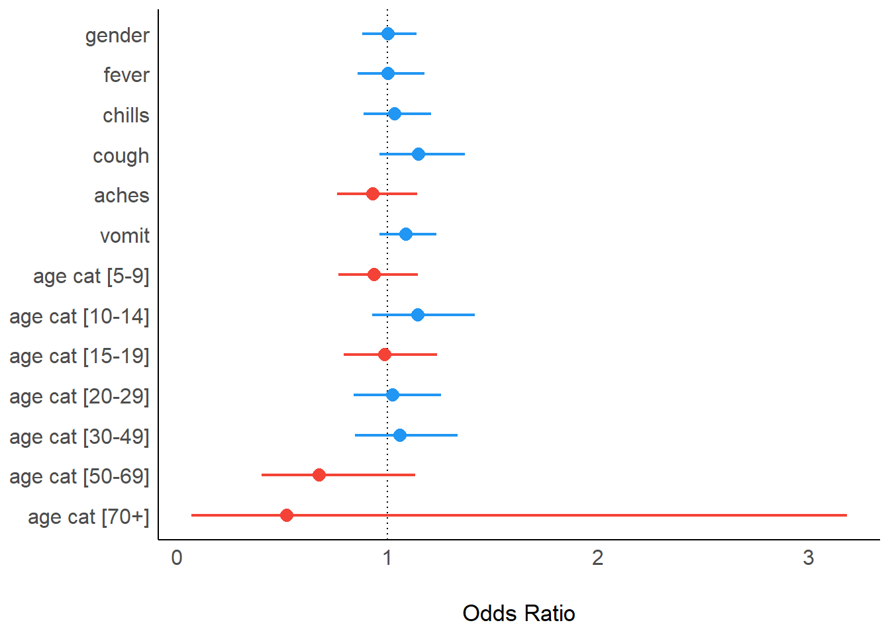

19 Régression univariée et multivariable
Cette page montre comment utiliser des fonctions de régression base de R telles que glm() et le package gtsummary pour
examiner les relations entre les variables (par exemple, les rapports de cotes, les rapports de risque et les
ratios de risque). Il utilise également des fonctions comme tidy() du package broom pour nettoyer les sorties de régression.
- Univarié : tableaux deux par deux
- Stratifié : estimations mantel-haenszel
- Multivariable : sélection des variables, sélection du modèle, tableau final
- Forest graphe
Pour la régression des risques proportionnels de Cox, voir la page Analyse d’enquête.
NOTE: Nous utilisons le terme multivariable pour faire référence à une régression avec plusieurs variables explicatives. En effet, un modèle multivarié serait une régression avec plusieurs résultats - voir ceci éditorial pour plus de detail
19.1 Preparation
Chargement des packages
Ce bout de code montre le chargement des packages nécessaires aux analyses. Dans ce manuel, nous mettons l’accent sur p_load() du package pacman, qui installe le package si nécessaire et le charge pour l’utiliser. Vous pouvez également charger les packages installés avec library() de base R. Voir la page sur R basics pour plus d’informations sur les packages de R.
pacman::p_load(
rio, # Importation du fichier
here, # Localisation de fichiers
tidyverse, # gestion des données + graphiques ggplot2,
stringr, # manipuler des chaînes de texte
purrr, # boucle sur les objets d'une manière ordonnée
gtsummary, # statistiques et tests sommaires
broom, # met de l'ordre dans les résultats des régressions
lmtest, # tests du rapport de vraisemblance
parameters, # alternative pour mettre de l'ordre dans les résultats des régressions
see # alternative pour visualiser les parcelles forestières
)Importation de données
Nous importons le jeu de données des cas d’une épidémie d’Ebola simulée. Si vous voulez continuer dans le processus d’acquisition de données suivait ce lien, cliquer pour téléchager le jeu de données linelist “propre” (as .rds file). Importez vos données avec la fonction import() du packages rio (elle accepte de nombreux types de fichiers comme .xlsx, .rds, .csv - voir la page Importer et exporter des données pour plus de détails)..
# importer la liste de lignes
linelist <- import("linelist_cleaned.rds")Les 50 premières lignes de linelist sont affichées ci-dessous.
Nettoyer les données
Stocker les variables explicatives
Nous stockons les noms des colonnes explicatives sous la forme d’un vecteur de caractères. Il sera référencé plus tard.
## definir les variables d'interet
explanatory_vars <- c("gender", "fever", "chills", "cough", "aches", "vomit")19.1.0.1 Convertir en 1 et 0 {.non numéroté}
Ci-dessous, nous convertissons les colonnes explicatives de “yes”/“no”, “m”/“f”, et “dead”/“alive” en 1 / 0, pour se conformer avec les attentes des modèles de régression logistique. Pour faire cela efficacement, nous avons utilisé across() de dplyr pour transformer plusieurs colonnes en une seule fois. La fonction que nous appliquons à chaque colonne est case_when() (également dplyr) qui applique une logique pour convertir les valeurs spécifiées en 1 et 0. Voir les sections sur across() et case_when() dans la page Nettoyage de données et fonctions essentielles).
Note : le “.” ci-dessous représente la colonne qui est traitée par across() à ce moment-là.
## convertir les variables dichotomique en 0/1
linelist <- linelist %>%
mutate(across(
.cols = all_of(c(explanatory_vars, "outcome")), ## pour chaque colonne listée et "résultat"
.fns = ~case_when(
. %in% c("m", "yes", "Death") ~ 1, ## recoder male, yes et death en 1
. %in% c("f", "no", "Recover") ~ 0, ## female, no and recover en 0
TRUE ~ NA_real_) ## autre definir comme valeurs manquantes
)
)Supprimer les lignes avec des valeurs manquantes
Pour supprimer les lignes avec des valeurs manquantes, vous pouvez utiliser la fonction tidyr drop_na(). Cependant, nous ne voulons l’utiliser que pour les lignes qui ont des valeurs manquantes dans les colonnes qui nous intéressent.
La première chose que nous devons faire est de nous assurer que notre vecteur explanatory_vars exlu la colonne age (age aurait produit une erreur dans l’opération précédente case_when(), qui ne concernait que les variables dichotomiques). Ensuite, nous envoyons la liste de lignes à drop_na() pour enlever toutes les lignes avec des valeurs manquantes dans la colonne outcome ou dans l’une des colonnes explanatory_vars.
Avant d’exécuter le code, le nombre de lignes dans la linelist est nrow(linelist).
## ajout de la catégorie d'âge aux variables explicatives
explanatory_vars <- c(explanatory_vars, "age_cat")
## supprimer les lignes avec des informations manquantes pour les variables d'intérêt
linelist <- linelist %>%
drop_na(any_of(c("outcome", explanatory_vars)))le nombre de lignes restant dans linelist est de nrow(linelist).
19.2 Univarié
Tout comme dans la page sur les Tableaux descriptifs, votre cas d’utilisation déterminera le package R que vous utiliserez. Nous vous présentons deux options pour effectuer une analyse univariée :
- Utiliser les fonctions disponibles dans base R pour afficher rapidement les résultats sur la console. Utilisez le package broom pour mettre de l’ordre dans les résultats.
- Utilisez le package gtsummary pour modéliser et obtenir des résultats prêts à être publiés.
base R
Régression linéaire
La fonction base R lm() effectue une régression linéaire, évaluant la relation entre une réponse numérique et des variables explicatives qui sont supposées avoir une relation linéaire.
Fournissez l’équation sous forme de formule, avec les noms des colonnes de réponse et d’explication séparés par un tilde ~. Spécifiez également l’ensemble de données à data =. Définissez les résultats du modèle comme un objet R, à utiliser ultérieurement.
lm_results <- lm(ht_cm ~ age, data = linelist)Vous pouvez ensuite exécuter summary() sur les résultats du modèle pour voir les coefficients (Estimations), la valeur P, les résidus, et d’autres mesures.
summary(lm_results)##
## Call:
## lm(formula = ht_cm ~ age, data = linelist)
##
## Residuals:
## Min 1Q Median 3Q Max
## -128.579 -15.854 1.177 15.887 175.483
##
## Coefficients:
## Estimate Std. Error t value Pr(>|t|)
## (Intercept) 69.9051 0.5979 116.9 <2e-16 ***
## age 3.4354 0.0293 117.2 <2e-16 ***
## ---
## Signif. codes: 0 '***' 0.001 '**' 0.01 '*' 0.05 '.' 0.1 ' ' 1
##
## Residual standard error: 23.75 on 4165 degrees of freedom
## Multiple R-squared: 0.7675, Adjusted R-squared: 0.7674
## F-statistic: 1.375e+04 on 1 and 4165 DF, p-value: < 2.2e-16Vous pouvez également utiliser la fonction tidy() du package broom pour afficher les résultats dans un tableau.
les résultats dans un tableau. Les résultats nous indiquent que pour chaque année de plus dans l’âge d’un individu, la taille augmente de de 3,5 cm, ce qui est statistiquement significatif.
tidy(lm_results)## # A tibble: 2 × 5
## term estimate std.error statistic p.value
## <chr> <dbl> <dbl> <dbl> <dbl>
## 1 (Intercept) 69.9 0.598 117. 0
## 2 age 3.44 0.0293 117. 0Vous pouvez également utiliser cette régression pour l’ajouter à un ggplot.
d’abord prendre les points des données observées et la colonne predite à partir de la ligne ajustée dans un dataframe en utilisant la fonction augment() de broom.
## rassembler les points de régression et les données observées dans un seul ensemble de données
points <- augment(lm_results)
## creer un graphique avec age comme axe des abscisses
ggplot(points, aes(x = age)) +
## ajouter point pour l'ordonné
geom_point(aes(y = ht_cm)) +
## ajouter de la droite de régression linéaire
geom_line(aes(y = .fitted), colour = "red")
Il est également possible d’ajouter une droite de régression linéaire simple dans ggplot
en utilisant la fonction geom_smooth().
## ajoute ta donnée dans le graphe
ggplot(linelist, aes(x = age, y = ht_cm)) +
## montrer les points
geom_point() +
## ajouter une regression linéaire
geom_smooth(method = "lm", se = FALSE)## `geom_smooth()` using formula = 'y ~ x'Consultez la section Ressources à la fin de ce chapitre pour obtenir des didacticiels plus détaillés.
Régression logistique
La fonction glm() du package stats (faisant partie de base R) est utilisée pour ajuster les modèles linéaires généralisés (GLM).
glm() peut être utilisée pour la régression logistique univariée et multivariée (par exemple pour obtenir des Odds Ratios). Voici les parties principales :
# arguments for glm()
glm(formula, family, data, weights, subset, ...)formula =Le modèle est fourni àglm()sous forme d’équation, avec le résultat à gauche et les variables explicatives à droite d’un tilde~.
family =Ceci détermine le type de modèle à exécuter. Pour la régression logistique, utilisezfamille = "binomiale", pour le poisson utilisezfamille = "poisson". D’autres exemples sont dans le tableau ci-dessous.
data =Spécifiez votre dataframe
Si nécessaire, vous pouvez également spécifier la fonction de lien via la syntaxe family = familytype(link = "linkfunction")). Vous pouvez en savoir plus dans la documentation sur les autres familles et les arguments optionnels tels que weights = et subset = (?glm).
| Famille | Fonction de liaison par défaut |
|---|---|
"binomial" |
(lien = "logit") |
"gaussian" |
(lien = "identity") |
"Gamma" |
(lien = "inverse") |
"inverse.gaussian" |
(link = "1/mu^2") |
"poisson" |
(lien = "log") |
"quasi" |
(lien = "identity", variance = "constant") |
"quasibinomial" |
(lien = "logit") |
"quasipoisson" |
(lien = "log") |
Lorsque vous exécutez glm(), il est plus courant de sauvegarder les résultats comme un objet R nommé. Vous pouvez ensuite afficher les résultats sur votre console en utilisant summary() comme indiqué ci-dessous, ou effectuer d’autres opérations sur les résultats (par exemple, exponentiation).
Si vous avez besoin d’exécuter une régression binomiale négative, vous pouvez utiliser le package MASS ; le glm.nb() utilise la même syntaxe que glm().
Pour une présentation des différentes régressions, consultez la UCLA stats page.
Univarié glm()
Dans cet exemple, nous évaluons la relation entre différentes catégories d’âge et le résultat du décès (codé 1 dans la section Préparation). Nous présentons ci-dessous un modèle univarié de outcome par age_cat. Nous enregistrons la sortie du modèle sous le nom de model et nous l’affichons ensuite avec summary() sur la console. Notez que les estimations fournies sont les log odds et que le niveau de base est le premier niveau du facteur age_cat (“0-4”).
model <- glm(outcome ~ age_cat, family = "binomial", data = linelist)
summary(model)##
## Call:
## glm(formula = outcome ~ age_cat, family = "binomial", data = linelist)
##
## Deviance Residuals:
## Min 1Q Median 3Q Max
## -1.339 -1.278 1.024 1.080 1.354
##
## Coefficients:
## Estimate Std. Error z value Pr(>|z|)
## (Intercept) 0.233738 0.072805 3.210 0.00133 **
## age_cat5-9 -0.062898 0.101733 -0.618 0.53640
## age_cat10-14 0.138204 0.107186 1.289 0.19726
## age_cat15-19 -0.005565 0.113343 -0.049 0.96084
## age_cat20-29 0.027511 0.102133 0.269 0.78765
## age_cat30-49 0.063764 0.113771 0.560 0.57517
## age_cat50-69 -0.387889 0.259240 -1.496 0.13459
## age_cat70+ -0.639203 0.915770 -0.698 0.48518
## ---
## Signif. codes: 0 '***' 0.001 '**' 0.01 '*' 0.05 '.' 0.1 ' ' 1
##
## (Dispersion parameter for binomial family taken to be 1)
##
## Null deviance: 5712.4 on 4166 degrees of freedom
## Residual deviance: 5705.1 on 4159 degrees of freedom
## AIC: 5721.1
##
## Number of Fisher Scoring iterations: 4Pour modifier le niveau de base d’une variable donnée, assurez-vous que la colonne est de classe facteur et déplacez le niveau désiré à la première position avec fct_relevel() (voir la page sur Factors). Par exemple, ci-dessous, nous prenons la colonne age_cat et définissons “20-29” comme niveau de base avant de passer le dataframe modifié dans glm().
linelist %>%
mutate(age_cat = fct_relevel(age_cat, "20-29", after = 0)) %>%
glm(formula = outcome ~ age_cat, family = "binomial") %>%
summary()##
## Call:
## glm(formula = outcome ~ age_cat, family = "binomial", data = .)
##
## Deviance Residuals:
## Min 1Q Median 3Q Max
## -1.339 -1.278 1.024 1.080 1.354
##
## Coefficients:
## Estimate Std. Error z value Pr(>|z|)
## (Intercept) 0.26125 0.07163 3.647 0.000265 ***
## age_cat0-4 -0.02751 0.10213 -0.269 0.787652
## age_cat5-9 -0.09041 0.10090 -0.896 0.370220
## age_cat10-14 0.11069 0.10639 1.040 0.298133
## age_cat15-19 -0.03308 0.11259 -0.294 0.768934
## age_cat30-49 0.03625 0.11302 0.321 0.748390
## age_cat50-69 -0.41540 0.25891 -1.604 0.108625
## age_cat70+ -0.66671 0.91568 -0.728 0.466546
## ---
## Signif. codes: 0 '***' 0.001 '**' 0.01 '*' 0.05 '.' 0.1 ' ' 1
##
## (Dispersion parameter for binomial family taken to be 1)
##
## Null deviance: 5712.4 on 4166 degrees of freedom
## Residual deviance: 5705.1 on 4159 degrees of freedom
## AIC: 5721.1
##
## Number of Fisher Scoring iterations: 4Affichage des résultats
Pour la plupart des utilisations, plusieurs modifications doivent être apportées aux sorties ci-dessus. La fonction tidy() du package broom est pratique pour rendre les résultats du modèle lisibles et comprehensibles.
Nous montrons ici comment combiner les sorties du modèle avec une table de comptage.
- Obtenez les estimations du logarithm de l’odd ratio exponentiées et les intervalles de confiance en passant le modèle à
tidy()et en définissantexponentiate = TRUEetconf.int = TRUE.
model <- glm(outcome ~ age_cat, family = "binomial", data = linelist) %>%
tidy(exponentiate = TRUE, conf.int = TRUE) %>% # exponentiée et généré IC
mutate(across(where(is.numeric), round, digits = 2)) # arrondir tous les colonnes numeriquesVoici la sortie du tibble model :
- Combinez les résultats de ces modèles avec un tableau de comptage. Ci-dessous, nous créons un tableau de comptage croisé avec la fonction
tabyl()de janitor, comme indiqué dans la page Tableaux descriptifs.
counts_table <- linelist %>%
janitor::tabyl(age_cat, outcome)Voici à quoi ressemble ce dataframe counts_table :
Maintenant, nous pouvons lier les résultats de counts_table et de model ensemble horizontalement avec bind_cols() (dplyr). Rappelez-vous qu’avec bind_cols() les lignes des deux dataframes doivent être parfaitement alignées. Dans ce code, comme nous effectuons des liaisons dans une chaîne de commandes, nous utilisons . pour représenter l’objet counts_table lorsque nous le lions à model. Pour terminer le processus, nous utilisons select() pour choisir les colonnes souhaitées et leur ordre, et enfin nous appliquons la fonction base R round() sur toutes les colonnes numériques pour spécifier 2 décimales.
combined <- counts_table %>% # debutons avec un tableau de comptage
bind_cols(., model) %>% # combiner avec les sorties de la regression
select(term, 2:3, estimate, # selectionner and arranger les cols
conf.low, conf.high, p.value) %>%
mutate(across(where(is.numeric), round, digits = 2)) ## arrondir à deux chiffres apres la virguleVoici à quoi ressemble le dataframe combiné, affiché joliment comme une image avec une fonction de flextable. La section Tableau pour la presentationn explique comment personnaliser de tels tableaux avec flextable, ou vous pouvez utiliser de nombreux autres packages tels que knitr ou GT.
combined <- combined %>%
flextable::qflextable()Mettre en Boucle plusieurs modèles univariés
Nous présentons ci-dessous une méthode utilisant glm() et tidy() pour une approche plus simple, voir la section sur gtsummary.
Pour exécuter les modèles sur plusieurs variables d’explicative afin de produire des odds ratios univariés (c’est-à-dire sans contrôle des autres variables), vous pouvez utiliser l’approche ci-dessous. Elle utilise str_c() de stringr pour créer des formules univariées (voir Caractères et chaînes de caractères), exécute la régression glm() sur chaque formule, passe chaque sortie glm() à tidy() et enfin rassemble toutes les sorties du modèle avec bind_rows() de tidyr. Cette approche utilise map() du packages purrr pour itérer - voir la page sur [Iteration, loops, and lists] pour plus d’informations sur cet outil.
Créez un vecteur de noms de colonnes des variables explicatives. Nous l’avons déjà en tant que
explanatory_varsdans la section Préparation de cette page.Utilisez
str_c()pour créer plusieurs formules de chaîne, avecoutcomeà gauche, et un nom de colonne deexplanatory_varsà droite. Le point.remplace le nom de la colonne dansexplanatory_vars.
explanatory_vars %>% str_c("outcome ~ ", .)## [1] "outcome ~ gender" "outcome ~ fever" "outcome ~ chills" "outcome ~ cough" "outcome ~ aches" "outcome ~ vomit"
## [7] "outcome ~ age_cat"Passez ces formules de chaîne à
map()et définissez~glm()comme la fonction à appliquer à chaque entrée. Dansglm(), définissez la formule de régression commeas.formula(.x)où.xsera remplacé par la formule de chaîne définie dans l’étape précédente.map()bouclera sur chacune des formules en format chaîne de caractères, en effectuant des régressions pour chacune d’entre elles.Les résultats de cette première
map()sont passés à une seconde commandemap(), qui appliquetidy()aux résultats de la régression.Finalement, la sortie de la seconde commande
map()(une liste de dataframe triés) est condensée avecbind_rows(), qui donne un dataframe avec tous les résultats univariés.
models <- explanatory_vars %>% # commencer avec les variables d'interets
str_c("outcome ~ ", .) %>% # combiner chaque variable dans une formule ("outcome ~ variable of interest")
# itérer à travers chaque formule univariée
map(
.f = ~glm( # passer les formules une par une à glm()
formula = as.formula(.x), # dans glm(), la formule de la chaîne de caractère est .x
family = "binomial", # spécifier le type de glm (logistique)
data = linelist)) %>% # jeu de données
# mettre en ordre chacun des résultats de la régression glm ci-dessus
map(
.f = ~tidy(
.x,
exponentiate = TRUE, # exponentiation
conf.int = TRUE)) %>% # retourne les intervalles de confiance
# réduire la liste des résultats de la régression en un seul dataframe
bind_rows() %>%
# arrondir tous les colonnes numeriques
mutate(across(where(is.numeric), round, digits = 2))Cette fois, l’objet final models est plus long car il représente maintenant les résultats combinés de plusieurs régressions univariées. Cliquez pour voir toutes les lignes de model.
Comme précédemment, nous pouvons créer une table des effectifs à partir de la linelist pour chaque variable explicative, la lier à models, et faire une belle table. Nous commençons par les variables, et nous les parcourons avec map(). Nous itérons à travers une fonction définie par l’utilisateur qui implique la création d’une table d’effectifs avec les fonctions dplyr. Ensuite, les résultats sont combinés et liés aux résultats du modèle models.
## pour chaque variable explicative
univ_tab_base <- explanatory_vars %>%
map(.f =
~{linelist %>% ## debuter avec linelist
group_by(outcome) %>% ## grouper le jeu de donnée par outcome
count(.data[[.x]]) %>% ## produire des comptages pour la variable d'intérêt
pivot_wider( ## étendre à un format large (comme dans un tableau croisé)
names_from = outcome,
values_from = n) %>%
drop_na(.data[[.x]]) %>% ## éliminer les lignes avec des valeurs manquantes
rename("variable" = .x) %>% ## changer la colonne de la variable d'intérêt en "variable".
mutate(variable = as.character(variable))} ## convertir en caractères, sinon les variables non-dichotomiques (catégorielles) apparaissent comme des facteurs et ne peuvent pas être fusionnées.
) %>%
## Réduire la liste des sorties de comptage à un seul dataframe
bind_rows() %>%
## fusionner avec les sorties de la régression
bind_cols(., models) %>%
## ne garder que les colonnes intéressées
select(term, 2:3, estimate, conf.low, conf.high, p.value) %>%
## arrondir les décimales
mutate(across(where(is.numeric), round, digits = 2))Voici à quoi ressemble le dataframe. Voir la page sur les Tableau pour la presentationn pour des idées sur la façon de convertir ce tableau en une jolie sortie HTML (par exemple avec flextable).
gtsummary package
Nous présentons ci-dessous l’utilisation de tbl_uvregression() du package gtsummary. Tout comme dans la page sur les Tableaux descriptifs, les fonctions gtsummary font un bon travail pour exécuter des statistiques et produire des résultats à usage professionnel. Cette fonction produit un tableau des résultats d’une régression univariée.
Nous ne sélectionnons que les colonnes nécessaires de la linelist (les variables explicatives et la variable de résultat) et les introduisons dans tbl_uvregression(). Nous allons exécuter une régression univariée sur chacune des colonnes que nous avons définies comme explanatory_vars dans la section Préparation des données (sexe, fièvre, frissons, toux, courbatures, vomissements, et age_cat).
Dans la fonction elle-même, nous fournissons la method = comme glm (sans guillemets), la colonne y = outcome (outcome), nous spécifions à method.args = que nous voulons exécuter une régression logistique via family = binomial, et nous lui disons d’exponentiser les résultats.
La sortie est en HTML et contient les comptes
univ_tab <- linelist %>%
dplyr::select(explanatory_vars, outcome) %>% ## selectionner variables d'interet
tbl_uvregression( ## produire un tableau univarié
method = glm, ## définir la régression que l'on veut exécuter (modèle linéaire généralisé)
y = outcome, ## définir la variable de résultat
method.args = list(family = binomial), ## définir le type de glm que l'on veut exécuter (logistique)
exponentiate = TRUE ## exponentiez pour produire des odds ratios (plutôt que des odds logarithmiques)
)
## visualiser le tableau des résultats univariés
univ_tab| Characteristic | N | OR1 | 95% CI1 | p-value |
|---|---|---|---|---|
| gender | 4,167 | 1.00 | 0.88, 1.13 | >0.9 |
| fever | 4,167 | 1.00 | 0.85, 1.17 | >0.9 |
| chills | 4,167 | 1.03 | 0.89, 1.21 | 0.7 |
| cough | 4,167 | 1.15 | 0.97, 1.37 | 0.11 |
| aches | 4,167 | 0.93 | 0.76, 1.14 | 0.5 |
| vomit | 4,167 | 1.09 | 0.96, 1.23 | 0.2 |
| age_cat | 4,167 | |||
| 0-4 | — | — | ||
| 5-9 | 0.94 | 0.77, 1.15 | 0.5 | |
| 10-14 | 1.15 | 0.93, 1.42 | 0.2 | |
| 15-19 | 0.99 | 0.80, 1.24 | >0.9 | |
| 20-29 | 1.03 | 0.84, 1.26 | 0.8 | |
| 30-49 | 1.07 | 0.85, 1.33 | 0.6 | |
| 50-69 | 0.68 | 0.41, 1.13 | 0.13 | |
| 70+ | 0.53 | 0.07, 3.20 | 0.5 | |
| 1 OR = Odds Ratio, CI = Confidence Interval | ||||
Vous pouvez apporter de nombreuses modifications à ce tableau, par exemple en ajustant les étiquettes de texte, en mettant en gras les lignes en fonction de leur valeur p, etc. Voir les didacticiels ici et ailleurs en ligne.
19.3 Stratifié
L’analyse stratifiée est actuellement en cours de développement pour gtsummary, cette page sera mise à jour en temps voulu.
19.4 Multivariable
Pour l’analyse multivariable, nous présentons à nouveau deux approches :
glm()ettidy().
- package gtsummary.
La methodologie est similaire pour chacune d’entre elles et seule la dernière étape, celle de l’élaboration d’un tableau final, est différente.
Conduite multivariable
Ici, nous utilisons glm() mais ajoutons plus de variables au côté droit de l’équation, séparées par des symboles plus (+).
Pour exécuter le modèle avec toutes nos variables explicatives, nous devrions exécuter :
mv_reg <- glm(outcome ~ gender + fever + chills + cough + aches + vomit + age_cat, family = "binomial", data = linelist)
summary(mv_reg)##
## Call:
## glm(formula = outcome ~ gender + fever + chills + cough + aches +
## vomit + age_cat, family = "binomial", data = linelist)
##
## Deviance Residuals:
## Min 1Q Median 3Q Max
## -1.383 -1.279 1.029 1.078 1.346
##
## Coefficients:
## Estimate Std. Error z value Pr(>|z|)
## (Intercept) 0.069054 0.131726 0.524 0.600
## gender 0.002448 0.065133 0.038 0.970
## fever 0.004309 0.080522 0.054 0.957
## chills 0.034112 0.078924 0.432 0.666
## cough 0.138584 0.089909 1.541 0.123
## aches -0.070705 0.104078 -0.679 0.497
## vomit 0.086098 0.062618 1.375 0.169
## age_cat5-9 -0.063562 0.101851 -0.624 0.533
## age_cat10-14 0.136372 0.107275 1.271 0.204
## age_cat15-19 -0.011074 0.113640 -0.097 0.922
## age_cat20-29 0.026552 0.102780 0.258 0.796
## age_cat30-49 0.059569 0.116402 0.512 0.609
## age_cat50-69 -0.388964 0.262384 -1.482 0.138
## age_cat70+ -0.647443 0.917375 -0.706 0.480
##
## (Dispersion parameter for binomial family taken to be 1)
##
## Null deviance: 5712.4 on 4166 degrees of freedom
## Residual deviance: 5700.2 on 4153 degrees of freedom
## AIC: 5728.2
##
## Number of Fisher Scoring iterations: 4Si vous voulez inclure deux variables et une interaction entre elles, vous pouvez les séparer avec un astérisque * au lieu d’un +. Séparez-les par un deux-points : si vous ne spécifiez que l’interaction. Par exemple :
glm(outcome ~ gender + age_cat * fever, family = "binomial", data = linelist)Optionnellement, vous pouvez utiliser ce code pour exploiter le vecteur prédéfini des noms de colonnes et recréer la commande ci-dessus en utilisant str_c(). Cela peut être utile si les noms de vos variables explicatives changent, ou si vous ne voulez pas les taper à nouveau.
## effectuer une régression avec toutes les variables d'intérêt
mv_reg <- explanatory_vars %>% ## commencer par un vecteur de noms de colonnes explicatives
str_c(collapse = "+") %>% ## combiner tous les noms des variables d'intérêt séparés par un plus
str_c("outcome ~ ", .) %>% ## combiner les noms des variables d'intérêt avec le résultat dans le style d'une formule
glm(family = "binomial", ## définir le type de glm comme logistique,
data = linelist) ## définir votre jeu de donnéesConstruire le modèle
Vous pouvez construire votre modèle étape par étape, en enregistrant plusieurs modèles qui incluent certaines variables explicatives. Vous pouvez comparer ces modèles avec des tests de rapport de vraisemblance en utilisant lrtest() du package lmtest, comme ci-dessous :
NOTE: L’utilisation de base anova(model1, model2, test = "Chisq) produit les mêmes résultats
model1 <- glm(outcome ~ age_cat, family = "binomial", data = linelist)
model2 <- glm(outcome ~ age_cat + gender, family = "binomial", data = linelist)
lmtest::lrtest(model1, model2)## Likelihood ratio test
##
## Model 1: outcome ~ age_cat
## Model 2: outcome ~ age_cat + gender
## #Df LogLik Df Chisq Pr(>Chisq)
## 1 8 -2852.6
## 2 9 -2852.6 1 0.0002 0.9883Une autre option consiste à prendre l’objet modèle et à appliquer la fonction step() du package stats. Spécifiez la direction de sélection des variables que vous souhaitez utiliser lors de la construction du modèle.
## choisir un modèle en utilisant la sélection avant basée sur l'AIC
## vous pouvez aussi faire "backward" ou "both" en ajustant la direction.
final_mv_reg <- mv_reg %>%
step(direction = "forward", trace = FALSE)Vous pouvez également désactiver la notation scientifique dans votre session R, pour plus de clarté :
options(scipen=999)Comme décrit dans la section sur l’analyse univariée, nous passons la sortie du modèle à tidy() pour exponentialiser les probabilités logarithmiques et les IC. Enfin, nous arrondissons toutes les colonnes numériques à deux décimales. Faites défiler pour voir toutes les lignes.
mv_tab_base <- final_mv_reg %>%
broom::tidy(exponentiate = TRUE, conf.int = TRUE) %>% ## obtenir un tidy dataframe d'estimations
mutate(across(where(is.numeric), round, digits = 2)) ## arrondirVoici à quoi ressemble le dataframe obtenu :
Combiner univarié et multivariable
Combinez avec gtsummary
Le package gtsummary fournit la fonction tbl_regression(), qui prendra . les sorties d’une régression (glm() dans ce cas) et produira un joli tableau de synthèse.
tableau récapitulatif.
## montrer le tableau des résultats de la régression finale
mv_tab <- tbl_regression(final_mv_reg, exponentiate = TRUE)Voyons le tableau :
mv_tab| Characteristic | OR1 | 95% CI1 | p-value |
|---|---|---|---|
| gender | 1.00 | 0.88, 1.14 | >0.9 |
| fever | 1.00 | 0.86, 1.18 | >0.9 |
| chills | 1.03 | 0.89, 1.21 | 0.7 |
| cough | 1.15 | 0.96, 1.37 | 0.12 |
| aches | 0.93 | 0.76, 1.14 | 0.5 |
| vomit | 1.09 | 0.96, 1.23 | 0.2 |
| age_cat | |||
| 0-4 | — | — | |
| 5-9 | 0.94 | 0.77, 1.15 | 0.5 |
| 10-14 | 1.15 | 0.93, 1.41 | 0.2 |
| 15-19 | 0.99 | 0.79, 1.24 | >0.9 |
| 20-29 | 1.03 | 0.84, 1.26 | 0.8 |
| 30-49 | 1.06 | 0.85, 1.33 | 0.6 |
| 50-69 | 0.68 | 0.40, 1.13 | 0.14 |
| 70+ | 0.52 | 0.07, 3.19 | 0.5 |
| 1 OR = Odds Ratio, CI = Confidence Interval | |||
Vous pouvez également combiner plusieurs tableaux de sortie différents produits par gtsummary avec
la fonction tbl_merge(). Nous combinons maintenant les résultats multivariables avec les résultats univariés de gtsummary que nous avons créés ci-dessus:
## combiner avec les résultats univariés
tbl_merge(
tbls = list(univ_tab, mv_tab), # combiner
tab_spanner = c("**Univariate**", "**Multivariable**")) # definier les entetes des colonnes| Characteristic | Univariate | Multivariable | |||||
|---|---|---|---|---|---|---|---|
| N | OR1 | 95% CI1 | p-value | OR1 | 95% CI1 | p-value | |
| gender | 4,167 | 1.00 | 0.88, 1.13 | >0.9 | 1.00 | 0.88, 1.14 | >0.9 |
| fever | 4,167 | 1.00 | 0.85, 1.17 | >0.9 | 1.00 | 0.86, 1.18 | >0.9 |
| chills | 4,167 | 1.03 | 0.89, 1.21 | 0.7 | 1.03 | 0.89, 1.21 | 0.7 |
| cough | 4,167 | 1.15 | 0.97, 1.37 | 0.11 | 1.15 | 0.96, 1.37 | 0.12 |
| aches | 4,167 | 0.93 | 0.76, 1.14 | 0.5 | 0.93 | 0.76, 1.14 | 0.5 |
| vomit | 4,167 | 1.09 | 0.96, 1.23 | 0.2 | 1.09 | 0.96, 1.23 | 0.2 |
| age_cat | 4,167 | ||||||
| 0-4 | — | — | — | — | |||
| 5-9 | 0.94 | 0.77, 1.15 | 0.5 | 0.94 | 0.77, 1.15 | 0.5 | |
| 10-14 | 1.15 | 0.93, 1.42 | 0.2 | 1.15 | 0.93, 1.41 | 0.2 | |
| 15-19 | 0.99 | 0.80, 1.24 | >0.9 | 0.99 | 0.79, 1.24 | >0.9 | |
| 20-29 | 1.03 | 0.84, 1.26 | 0.8 | 1.03 | 0.84, 1.26 | 0.8 | |
| 30-49 | 1.07 | 0.85, 1.33 | 0.6 | 1.06 | 0.85, 1.33 | 0.6 | |
| 50-69 | 0.68 | 0.41, 1.13 | 0.13 | 0.68 | 0.40, 1.13 | 0.14 | |
| 70+ | 0.53 | 0.07, 3.20 | 0.5 | 0.52 | 0.07, 3.19 | 0.5 | |
| 1 OR = Odds Ratio, CI = Confidence Interval | |||||||
Combiner avec dplyr
Une autre façon de combiner les sorties univariées et multivariées de glm()/tidy() est d’utiliser les fonctions de jonction dplyr.
- fusionner les résultats univariés de tout à l’heure (
univ_tab_base, qui contient les comptages) avec les résultats multivariables triésmv_tab_base.
- Utilisez
select()pour ne garder que les colonnes que nous voulons, spécifier leur ordre, et les renommer.
- Utilisez
round()avec deux décimales sur toutes les colonnes qui sont classe Double
## combiner des tableaux univariés et multivariés
left_join(univ_tab_base, mv_tab_base, by = "term") %>%
##choisir les colonnes et les renommer
select( # nouveau nom = ancien nom
"characteristic" = term,
"recovered" = "0",
"dead" = "1",
"univ_or" = estimate.x,
"univ_ci_low" = conf.low.x,
"univ_ci_high" = conf.high.x,
"univ_pval" = p.value.x,
"mv_or" = estimate.y,
"mvv_ci_low" = conf.low.y,
"mv_ci_high" = conf.high.y,
"mv_pval" = p.value.y
) %>%
mutate(across(where(is.double), round, 2)) ## # A tibble: 20 × 11
## characteristic recovered dead univ_or univ_ci_low univ_ci_high univ_pval mv_or mvv_ci_low mv_ci_high mv_pval
## <chr> <dbl> <dbl> <dbl> <dbl> <dbl> <dbl> <dbl> <dbl> <dbl> <dbl>
## 1 (Intercept) 909 1168 1.28 1.18 1.4 0 1.07 0.83 1.39 0.6
## 2 gender 916 1174 1 0.88 1.13 0.97 1 0.88 1.14 0.97
## 3 (Intercept) 340 436 1.28 1.11 1.48 0 1.07 0.83 1.39 0.6
## 4 fever 1485 1906 1 0.85 1.17 0.99 1 0.86 1.18 0.96
## 5 (Intercept) 1472 1877 1.28 1.19 1.37 0 1.07 0.83 1.39 0.6
## 6 chills 353 465 1.03 0.89 1.21 0.68 1.03 0.89 1.21 0.67
## 7 (Intercept) 272 309 1.14 0.97 1.34 0.13 1.07 0.83 1.39 0.6
## 8 cough 1553 2033 1.15 0.97 1.37 0.11 1.15 0.96 1.37 0.12
## 9 (Intercept) 1636 2114 1.29 1.21 1.38 0 1.07 0.83 1.39 0.6
## 10 aches 189 228 0.93 0.76 1.14 0.51 0.93 0.76 1.14 0.5
## 11 (Intercept) 931 1144 1.23 1.13 1.34 0 1.07 0.83 1.39 0.6
## 12 vomit 894 1198 1.09 0.96 1.23 0.17 1.09 0.96 1.23 0.17
## 13 (Intercept) 338 427 1.26 1.1 1.46 0 1.07 0.83 1.39 0.6
## 14 age_cat5-9 365 433 0.94 0.77 1.15 0.54 0.94 0.77 1.15 0.53
## 15 age_cat10-14 273 396 1.15 0.93 1.42 0.2 1.15 0.93 1.41 0.2
## 16 age_cat15-19 238 299 0.99 0.8 1.24 0.96 0.99 0.79 1.24 0.92
## 17 age_cat20-29 345 448 1.03 0.84 1.26 0.79 1.03 0.84 1.26 0.8
## 18 age_cat30-49 228 307 1.07 0.85 1.33 0.58 1.06 0.85 1.33 0.61
## 19 age_cat50-69 35 30 0.68 0.41 1.13 0.13 0.68 0.4 1.13 0.14
## 20 age_cat70+ 3 2 0.53 0.07 3.2 0.49 0.52 0.07 3.19 0.4819.5 Forest plot
Cette section montre comment produire un graphique avec les résultats de votre régression. Il y a deux options, vous pouvez construire un graphique vous-même en utilisant ggplot2 ou utiliser un méta-package appelé easystats (un package qui inclut plusieurs packages). méta-package appelé easystats (un package qui inclut plusieurs packages).
Consultez la page sur Les bases de ggplot si vous n’êtes pas familier avec le package de traçage ggplot2.
ggplot2 package
Vous pouvez construire un graphique forest avec ggplot() en traçant les éléments des résultats de la régression multivariable. Ajoutez les couches des tracés en utilisant ces “geoms” :
- estimations avec
geom_point()
- intervalles de confiance avec “geom_errorbar()`”.
- une ligne verticale à OR = 1 avec
geom_vline().
Avant de tracer un graphique, vous pouvez utiliser fct_relevel() du package forcats pour définir l’ordre des variables/niveaux sur l’axe des ordonnées. ggplot() peut les afficher dans l’ordre alpha-numérique, ce qui ne fonctionnerait pas bien pour ces valeurs de catégories d’âge (“30” apparaîtrait avant “5”). Voir la page sur les facteurs pour plus de détails.
## enlever le terme intercept dans le resultats multivariables
mv_tab_base %>%
#definir l'odre d'apparition des niveaux le long de l'axe y
mutate(term = fct_relevel(
term,
"vomit", "gender", "fever", "cough", "chills", "aches",
"age_cat5-9", "age_cat10-14", "age_cat15-19", "age_cat20-29",
"age_cat30-49", "age_cat50-69", "age_cat70+")) %>%
# supprimer la ligne denommé "intercept" dans le graphique
filter(term != "(Intercept)") %>%
## concevoir un graphe avec la variable sur l'axe des y et l'estimation (OR) sur l'axe des x
ggplot(aes(x = estimate, y = term)) +
## montrer estimate comme un point
geom_point() +
## ajouter une barre d'erreur pour les intervalles de confiance
geom_errorbar(aes(xmin = conf.low, xmax = conf.high)) +
## montrer où OR = 1 est pour référence comme une ligne pointillée
geom_vline(xintercept = 1, linetype = "dashed")
Packages easystats
Une alternative, si vous ne voulez pas le bon niveau de contrôle que ggplot2 fournit, est d’utiliser une combinaison des packages easystats.
La fonction model_parameters() du package parameters fait l’équivalent de la fonction du package broom.
de la fonction tidy() du package broom. Le package see accepte alors ces sorties
et crée un graphique forest par défaut sous la forme d’un objet ggplot().
pacman::p_load(easystats)
## supprimer le terme interception de vos résultats multivariables
final_mv_reg %>%
model_parameters(exponentiate = TRUE) %>%
plot()
19.6 Ressources
Le contenu de cette page a été alimenté par ces ressources et vignettes en ligne :